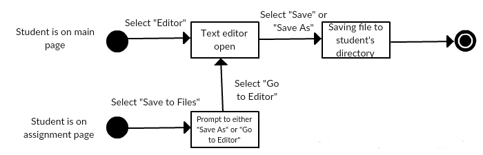

Use Cases
Use Case Diagram
UC01.
Name: Login to system
User stories addressed: - -
Actors: Registered User
Precondition: GUI is downloaded and is accessible to user. GUI on their system.
-
Main Scenario:
- 1) User (admin, instructor, marker, student) opens GUI
- 2) User enters login credentials
- 3) User clicks "Login" on main GUI menu
- 4) System verifies current account credentials
Postcondition: User is viewing system main menu (after logged in).
-
Alternate scenario:
Incorrect credentials
- 4.0) System determines user credentials are incorrect
- 4.1) System returns prompt asking to re-enter user login credentials
State Chart

UC02.
Name: Logout from system
User stories addressed: - -
Actors: Registered User
Precondition: User finished UC-01 (login), & finished with current session.
-
Main Scenario:
- 1) User clicks "Logout" button on appropriate system menu
- 2) System prompts User to confirm logout
- 3) User confirms logout
Postcondition: User is viewing GUI main login menu.
-
Alternate scenario:
Click 'X' to logout
- 1.0) User clicks 'x' button on GUI
-
Save before closing
- 2.0) System determines if user has unsaved work
- 2.1) System prompts user to save current work
- 2.2) System commits save(s) to server
State Chart

UC03.
Name: Create user account(s)
User stories addressed: US-01
Actors: Admin
Precondition: Admin is finished UC-01 (login), & is viewing system main (admin) menu.
-
Main Scenario:
- 1) Admin clicks "Add Accounts" via menu
- 2) System prompts admin to enter user account info
- 3) Admin uploads file containing user account info (username / tmp-password)
- 4) System creates all accounts (add to database - if no error)
- 5) Admin clicks "Create"
- 6) System returns confirmation/prompt of success
Postcondition: Admin is viewing list of added usernames/passwords.
-
Alternate scenario:
Manually add user accounts
- 3.0) Admin manually inputs user account info (username/password) via GUI menu
-
Admin clicks "Cancel"
- 5.0) System determines user credentials are incorrect
- Postcondition: Admin is viewing system main (admin) menu.
-
Error uploading user account info
- 3.0) System informs admin of error(s) via pop-up/a prompt
- 3.1) Admin addresses error(s) (uploading error)
-
Error creating account(s)
- 6.0) System informs admin of error(s) via pop-up/a prompt
- 6.1) Admin addresses error(s) (username/password error, etc.)
State Chart

UC04.
Name: Create course(s)
User stories addressed: US-02
Actors: Admin
Precondition: Admin is finished UC-01 (login), & is viewing system main (admin) menu.
-
Main Scenario:
- 1) Admin clicks "Add Courses" via menu
- 2) System prompts admin to enter course info
- 3) Admin uploads file containing course info (code, name, short description)
- 4) System creates all courses (adds to database - if no error)
- 5) Admin clicks "Create"
- 6) System returns confirmation/prompt of success
Postcondition: Admin is viewing list of recently added courses.
-
Alternate scenario:
Manually add course(s)
- 3.0) Admin manually inputs course info via GUI menu
-
Cancel adding courses
- 5.0) Admin clicks "Cancel"
- Postcondition: Admin is viewing system main (admin) menu.
-
Error uploading course info
- 3.0) System informs admin of error(s) via pop-up/a prompt
- 3.1) Admin addresses error(s) (uploading error)
-
Error creating course(s)
- 6.0) System informs admin of error(s) via pop-up/a prompt
- 6.1) Admin addresses error(s) (course error)
-
Organize course(s)
- 4.0) Organize courses by year and semester via GUI menu
State Chart

UC05.
Name: Assign user(s) to course(s)
User stories addressed: US-03, US-05
Actors: Admin
Precondition: Admin finished UC-03, UC-04, & is viewing system main (admin) menu.
-
Main Scenario:
- 1) Admin clicks "Assign Users" via menu
- 2) System prompts admin to link users to courses (system page/menu)
- 3) Admin links users to courses via appropriate system page/menu
- 4) Admin commit changes via "Save" option/menu (commit changes to database)
Postcondition: Admin is viewing list courses with assigned users.
-
Alternate scenario:
Error linking user to course
- 3.0) System informs admin of error(s) via pop-up/a prompt
- 3.1) Admin addresses error(s) (course full, etc)
-
Revert changes
- 4.0) Admin reverts changes via "Cancel" option/menu
- Postcondition: Admin is viewing Assign User menu (step 2).
State Chart

UC06.
Name: Remove user(s) from course(s)
User stories addressed: US-04
Actors: Admin
Precondition: Admin finished UC-01 & UC-05, & is viewing system main (admin) menu.
-
Main Scenario:
- 1) Admin clicks "Remove Users" via menu
- 2) System prompts Admin to remove users from course(s) (system page/menu)
- 3) Admin chooses course to remove user(s)
- 4) Admin removes user(s) from course
- 5) Admin commit changes via "Save" option/menu (commit changes to database)
Postcondition: Admin is viewing list of removed users.
-
Alternate scenario:
Manually remove user
- 1.0) Admin clicks User via GUI menu
- 1.1) System prompts user with User info page
- 1.2) Admin continues from step 3
-
Right-click remove User
- 1.0) Admin right-clicks user via GUI menu
- 1.1) Admin selects remove from course
- 1.2) Admin continues from step 3
-
Revert changes
- 5.0) Admin reverts changes via "Cancel" option/menu
- Postcondition: Admin is viewing list of courses/users (step 2).
State Chart

UC07.
Name: Reset user(s) password(s)
User stories addressed: US-04
Actors: Admin, Registered User
Precondition: Admin finished UC-01 & UC-03, & is viewing system main (admin) menu.
-
Main Scenario:
- 1) Admin clicks "Reset User Password" via menu
- 2) System prompts admin to reset user password (list of courses/users)
- 3) Admin selects user(s) to reset password
- 4) Admin commit changes via "Save" option/menu (commit changes to database)
Postcondition: Admin viewing page/menu with user name & generated password.
-
Alternate scenario:
Right-click remove User
- 1.0) Admin right-clicks user via GUI menu
- 1.1) Admin selects reset password
- 1.2) Admin continues from step 3
-
Revert changes
- 4.0) Admin reverts changes via "Cancel" option/menu
- Postcondition: Admin viewing list of courses/users (step 2).
-
Automated password reset
- Precondition: UC-01 & UC-03 finished. User is viewing system main (login) menu.
- 1.0) User clicks “Reset Password” button via GUI login menu
- 1.1) System prompts user for confirmation
- 1.2) User accepts or declines
- Postcondition: User viewing GUI main login page.
State Chart

UC08.
Name: Set new account password
User stories addressed: - -
Actors: Registered User
Precondition: Admin finished UC-01, UC-03 & UC-07, & user is viewing system login menu.
-
Main Scenario:
- 1) User enters login credentials via system login menu
- 2) System recognizes that current user's password was reset & prompts user (menu/page)
- 3) User enters new account password in field
- 4) User clicks "Submit"
- 5) System returns confirmation/prompt of success
- 6) System prompts user to login with new password via system login menu
Postcondition: User is viewing system login menu.
-
Alternate scenario:
Password error
- 4.0) Entered password violates password rules or isn't accepted
- 4.1) System returns prompt asking to re-enter different user password
State Chart
UC09.
Name: Add new Assignment
User stories addressed: US-06
Actors: Instructor
Precondition: Finished UC-03 to 05, & instructor is viewing main (instructor) menu.
-
Main Scenario:
- 1) Instructor clicks "Add Assignment" via menu
- 2) System prompts instructor to add assignment to course(s) (system page/menu)
- 3) Instructor selects course from list
- 4) System prompts instructor to add new assignment
- 5) Instructor selects directory (w/ files) for new assignment
- 6) System adds directory (w/ files) to cloud to be downloaded by users
- 7) System returns confirmation/prompt of success
- 8) System notifies all users (linked to course) of new assignment
Postcondition: Instructor is viewing newly added assignment directory.
-
Alternate scenario:
Manually add assignment
- 5.0) Instructor creates directory for new assignment
- 5.1) Instructor creates files via GUI
- 5.2) Instructor adds files to new assignment
- 5.3) Instructor continues from step 7
-
Error creating/adding assignment
- 6.0) System informs instructor of error(s) via pop-up/a prompt
- 6.1) Instructor addresses error(s); consult Admin, retry, etc.
-
Modify existing assignment
- 1.0) Instructor clicks assignment from appropriate system menu list
- 1.1) System prompts instructor with assignment info menu (directory w/files)
- 1.2) Instructor clicks "Edit"
- 1.3) Instructor modifies existing assignment (directory/files)
- 1.4) Instructor continues from step 7
State Chart

UC10.
Name: Add Test Suite
User stories addressed: US-07
Actors: Instructor
Preconditions: Instructor is logged in and on the main page.
-
Main Scenario:
- 1) Instructor selects the "Editor" button.
- 2) Instructor selects the "Test Suite" option under the "New" menu tab.
- 3) Instructor writes the test suite.
- 4) When the instructor navigates away from the editor the system compiles the files in the instructor's "Test Suites" directory.
- Postconditions: The instructor's test suite is saved and compiled. It is not associated with any particular assignment.
-
Alternate scenario:
Upload Existing Test Suite
- 1.0) Instructor selects "Files".
- 1.1) Instructor selects the "Test Suites" directory.
- 1.2) Instructor selects "Add Files".
- 1.3) Instructor uploads the files from their computer.
- 1.4) When the instructor navigates away from the "Test Suites" directory the system compiles the files.
- Postconditions: The instructor's test suite is saved and compiled. It is not associated with any particular assignment.
-
Alternate scenario:
Invalid Upload
- 1.0.0) Instructor is informed the files they uploaded are invalid (with a reason if possible.)
- 1.0.1) Instructor is returned to their "Test Suites" directory.
- Postconditions: Nothing is saved by the system.
State Chart

UC11.
Name: Associate Test Suite with Assignment
User stories addressed: US-08
Actors: Instructor
Preconditions: Instructor is logged in and on the main page.
-
Main Scenario:
- 1) Instructor navigates to the page of the relevant course.
- 2) Instructor selects the assignment/evaluation with which they want to associate the test suite.
- 3) Instructor is prompted to select the desired test suite from their "Test Suites" directory.
- 4) Instructor is prompted to select whether they want the suite run automatically on incoming submissions.
- 5) Instructor is prompted to select if they want the suite to automatically return results to students.
- Postconditions: The system saves the suite to apply to the assignment's submissions.
-
Alternate scenario:
Associate Test Suite with New Assignment
- 2.0) Instructor selects the "Add New Evaluation" option. (Refer to User Story 6)
- 2.1) Instructor adds an assignment.
- Continue to 3) in the main scenario.
State Chart
UC12.
Name: Retrieve Students' Marks
User stories addressed: US-09
Actors: Instructor
Preconditions: Instructor is logged in and on the main page.
-
Main Scenario:
- 1) Instructor selects any course the specified student is taking and is taken to the course page.
- 2) Instructor selects "Grades" and is taken to a page containing a table with all marks for every student in that course.
- 3) Instructor selects "Download Grades" and is prompted to select a file format (XML, CSV, etc.)
- 4) The table is downloaded to the instructor's computer.
- Postconditions: The instructor has access to a file containing all student marks in the selected course.
-
Alternate scenario:
Retrieve One Student's Marks
- 3.0) Instructor chooses the desired student from the table.
- 3.1) Instructor is taken to a page with a table containing the students grades in all the courses they have access to (i.e., in which the instructor is either a Marker or Instructor.)
- 3.2) Instructor selects "Download Grades" and is prompted to select a file format.
- 3.3) The table is downloaded to the instructor's computer.
- Postconditions: The instructor has access to a file containing the student's marks.
State Chart

UC13.
Name: Upload Assignment Solutions
User stories addressed: US-10
Actors: Instructor
Preconditions: Instructor is logged in and on the main page.
-
Main Scenario:
- 1) Instructor navigates to the page of the relevant course.
- 2) Instructor selects the relevant assignment.
- 3) Instructor selects the "Add Solution" option.
- 4) Instructor is prompted to upload a file (docx, pdf, doc, etc.)
- 5) Instructor selects when solution is to be made available (immediately, as soon as assignment deadline is reached, at specified time.)
- Postconditions: The instructor has access to a file containing all student marks in the selected course.
-
State Chart

UC14.
Name: Mark Assignments
User stories addressed: US-09
Actors: Marker
Preconditions: Marker is logged in and on the main page.
-
Main Scenario:
- 1) Marker selects the relevant course.
- 2) Marker selects the relevant evaluation.
- 3) Marker selects the first submission they want to grade.
- 4) Marker is given the option to either compile and run the submission or review the code.
- 5) Marker selects "Compile and Run"
- 6) The program is run in the terminal window.
- 7) The marker selects "Assign Grade".
- 8) The marker is prompted for a grade.
- 9) The marker is returned to the evaluation page.
- Postconditions: The system assigns the marker's grade to the evaluation, sends the student any feedback, notifies the student.
-
Alternate scenario:
Download Every Assignment Submission
- 3.0) Marker selects "Download All".
- 3.1) The code is downloaded to the marker's computer.
- Postconditions: The marker has downloaded every submission's code.
-
Alternate scenario:
Download One Assignment
- 3.0) Marker selects the targeted submission.
- 3.1) Marker selects "Download".
- 3.2) The code is downloaded to the marker's computer.
- Postconditions: The marker has downloaded the assignment's code.
-
Alternate scenario:
Use Test Suite Added by Instructor
- 5.0) Marker selects "View Available Test Suites".
- 5.1) Marker selects the "Use for selected evaluation" option of the appropriate test suite.
- 5.2) The suite's output is displayed to the marker.
- Postconditions: The system displays the suite's results.
-
Alternate scenario:
Marker Views the Code
- 5.0) The marker is shown the code and a blank editable comments file in adjacent panes.
- 5.1) The marker selects "Submit Feedback".
- 5.2) The marker is returned to the targeted submission's page.
- Postconditions: The system displays the assignment's code.
State Chart

UC15.
Name: Use Text Editor
User stories addressed: US-12
Note: Each user-created file does not necessarily need to be linked to an assignment. Students are able to write and compile their own programs.
Actors: Registered User
Preconditions: Student is logged in and on the main page.
-
Main Scenario:
- 1) Student selects the "Editor" button.
- 2) Student is taken to a basic text editor.
- 3) Student saves the file to their directory in the cloud.
- Postconditions: The system saves the file the student has created. The user is still on the editor page.
-
Alternate scenario:
Use Text Editor for Specified Assignment
Preconditions: Student is logged in and on the relevant assignment page.
Save to Files
- 5.0) The assignment is displayed to the student/
- 5.1) The student selects "Save to Files".
- 5.2) The student is prompted either to "Go to Editor" or to select the desired save directory.
- 5.2) The student selects "Go to Editor"
- 5.2) The student is taken to the text editor with the default save location set to a directory corresponding to the course and assignment name.
- Postconditions: The system displays the assignment's code.
State Chart

UC16.
Name: Registered user compiles through the cloud.
User stories addressed: US-13
Actors: Registered User
Precondition: The cloud are capable of executing files written by multiple languages(Java, C, C++,etc).
-
Main Scenario:
- 1) User clicks on language button to choose the preferred language, like Java, C,C++,etc.
- 2) User chooses the language.
- 3) User compiles through the cloud.
- 4) The cloud highlights syntax and matches bracket based on the language the user chose.
- 5)The cloud can save the code in a specific interval.
- 6)The user runs the program.
- 7a)The cloud returns the output.
- 8a)The cloud stores the class/executable files into user account after the user has done.
-
Alternate scenario:
- 7b) The code has errors, the cloud reports the error type and the line in which the error lies.
- 8b) User modifies the code and reruns the code.
Postcondition: User must keep the files in the appropriate locations in the account.
State Chart
UC17.
Name: Registered user downloads compile object files to execute written code.
User stories addressed: US-14
Actors: Registered User
Precondition: User has complied objected files in the account to download.
-
Main Scenario:
- 1) User goes to the location that contains the compile files.
- 2) User chooses the download option.
- 3) User chooses the file(s) to download, multiple choice of file is available.
- 4) User clicks on download button.
- 5) User chooses the local directory.
- 6a) User downloads the file(s).
-
Alternate scenario:
- 6b)There are name conflicts between some of the file on the cloud and the local file. System asks user which way to choose: replace or cancel.
- 7) User chooses cancel.
- 8) User resolves the name conflicts and downloads the files.
Postcondition: User downloads the files to the appropriate locate so that the files are executable locally.
State Chart

UC18.
Name: Registered user uploads/downloads files to share files with other users.
User stories addressed: US-15
Actors: Registered user
Precondition: The GUI interface must be connected to the cloud.
-
Main Scenario:
- 1) User opens the interface.
- 2) User clicks on upload/download button to upload/download files.
- 3) A window that shows the local directories or the cloud directories pops up.
- 4) User chooses the file(s) from the directory, multiple choice of files is available.
- 5a) User chooses the appropriate directory to upload/download to.
- 6a) User uploads/downloads the file(s).
-
Alternate scenario:
- 5b) There are name conflicts between upload/download files and local/cloud files. User has two choices: replace or cancel.
- 6b) User chooses cancel.
- 7) User resolves the name conflicts and upload/download file(s).
Postcondition: Other designated users have authority to access the uploaded/downloaded file(s).
State Chart

UC19.
Name: Registered user execute command line application to test written code.
User stories addressed: US-16
Actors: Registered user
Precondition: The user can input the parameters of the code through GUI interface to the cloud and can retrieve the output given by the cloud.
-
Main Scenario:
- 1) User opens the GUI interface.
- 2) GUI interface pops up.
- 3) User chooses the files to execute.
- 4a) User types the command line to execute the code. If there are inputs for the code, just type the inputs after the command line.
- 5a) The result from the cloud shows on the terminal window.
-
Alternate scenario:
- 4b) There are errors or the inputs don't meet the requirement (the number or the type of inputs does not match), errors are reported or the input problem is reported, and the line in which the errors
lie is also shown.
- 5b) User fixes the errors or the input problem.
- 6) User retypes the command line to run to code.
- 7) The result shows on the terminal window.
Postcondition: User can run the code in the GUI interface for many times.
State Chart

UC20.
Name: Student submits assignments to be marked.
User stories addressed: US-17
Actors: Student
Precondition: Student must submit the assignment through the right account.
-
Main Scenario:
- 1) User opens the GUI interface.
- 2) Student chooses the language the code was written in.
- 3) Student chooses the assignment.
- 4a) Student clicks on submit.
- 5a) Student submits the assignments.
-
Alternate scenario:
- 4b) Student modifies the assignment before the deadline, and submits the assignments again.
- 5b) Student has only submitted part of the assignment, and then submits the rest.
Postcondition: The marker must figure if the student submits more than one time, if the last time is the rest of the assignment or the modified assignment, so that he/she can know the previous submission can be disregarded.
State Chart

UC21.
Name: Registered user runs GUI application.
User stories addressed: US-18
Actors: Registered user
Precondition: All the files to be compiled into exe or jar must be in the same directory.
-
Main Scenario:
- 1) User opens GUI interface.
- 2) User chooses the compiled type: exe or jar.
- 3) User chooses the files to run.
- 4a) User clicked on compile button.
- 5a) User runs the files.
-
Alternate scenario:
- 4b) There are errors,the error and the line in which the error lies are reported.
- 5b) User modifies the files.
- 6) User reruns the files.
Postcondition: The compiled files must be executable through the GUI interface.
State Chart

UC22.
Name: Student uses test suite.
User stories addressed: US-19
Actors: Student
Precondition: Student is logged in and on the page of the relevant assignment submission. The code is compiled.
-
Main Scenario:
- 1) Student selects "Run with tests".
- 2) The system prompts the student to choose an available test suite.
- 3) Student selects the desired test suite.
- 4) The system runs the test suite and the code.
- Postconditions: The code output and test results are displayed to the student on the system's console.
UC23.
Name: Registered user creates file.
User stories addressed: US-20
Actors: Registered user
Precondition: The user is logged in and on the editor page.
-
Main Scenario:
- 1) User selects "Save to Files"
- 2) User is prompted to enter a name and select a file type.
- 3) The system saves the file.
- Postconditions: The user is still on the text editor page. The file is saved by the system.
-
Alternate scenario:
Error in saving
- 3.1) The system alters the user of the error's cause (e.g. invalid filename).
- 3.2) The "Save As" window is displayed again to give the user another chance to save the file.
Postcondition: The file is not saved. The system displays the "Save As" window.
UC24.
Name: Student views feedback on assignment submission.
User stories addressed: US-21
Actors: Student
Precondition: The student is logged in and on the main page.
-
Main Scenario:
- 1) Student selects "Files" from the left menubar.
- 2) User navigates to the directory containing the desired assignment.
- 3) User chooses the file titled "Feedback".
- 4) The system displays the feedback file.
- Postonditions: The student is on the "View File" page. The System is displaying the student's assignment's submission's feedback.